Практическая работа №3.1
Модели базы данных
class CarOwner(models.Model):
last_name = models.CharField(max_length=30)
first_name = models.CharField(max_length=30)
birth_date = models.DateField(null=True, blank=True)
class Meta:
db_table = 'car_owner'
def __str__(self):
return f"{self.first_name} {self.last_name}"
class DrivingLicense(models.Model):
id_owner = models.ForeignKey(CarOwner, on_delete=models.CASCADE, related_name='driving_license')
number_license = models.CharField(max_length=10)
type = models.CharField(max_length=10)
date_issue = models.DateField()
class Meta:
db_table = 'driving_license'
def __str__(self):
return f"License {self.number_license} ({self.type}) — {self.id_owner}"
class Car(models.Model):
state_number = models.CharField(max_length=15)
brand = models.CharField(max_length=20)
model = models.CharField(max_length=20)
colour = models.CharField(max_length=30, null=True, blank=True)
owners = models.ManyToManyField(CarOwner, through='Ownership')
class Meta:
db_table = 'car'
def __str__(self):
return f"{self.brand} {self.model} ({self.state_number})"
class Ownership(models.Model):
id_owner = models.ForeignKey(CarOwner, null=True, on_delete=models.SET_NULL, related_name="owner_car")
id_car = models.ForeignKey(Car, null=True, on_delete=models.SET_NULL)
start_date = models.DateField()
final_date = models.DateField(null=True, blank=True)
class Meta:
db_table = 'ownership'
def __str__(self):
owner = self.id_owner or "Unknown owner"
car = self.id_car or "Unknown car"
status = "current" if self.final_date is None else f"ended {self.final_date}"
return f"{owner} → {car} ({self.start_date} – {status})"
Импорт необходимых библиотек
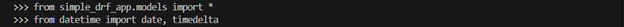
Задание 1
Создать 6-7 автовладельцев
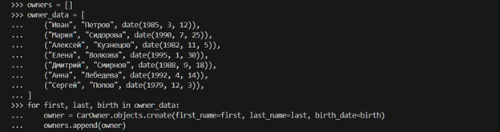
Создать 5-6 автомобилей
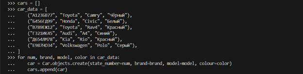
Выдать каждому владельцу удостоверение
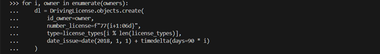
Связать каждого владельца с 1–3 машинами через ассоциативную сущность «Владение».
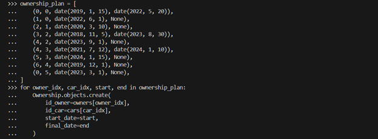
Отобразить автомобиль
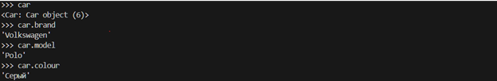
Отобразить автовладельца
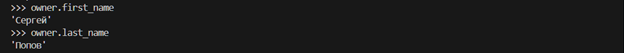
Отобразить владельцев конкретного автомобиля
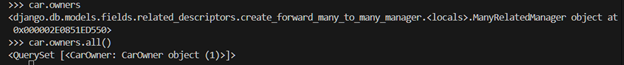
Задание 2
Выведете все машины марки “Toyota”
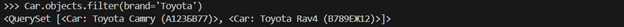
Найти всех водителей с именем “Олег” (или любым другим именем на ваше усмотрение)
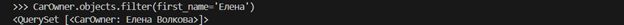
Взяв любого случайного владельца получить его id, и по этому id получить экземпляр удостоверения в виде объекта модели (можно в 2 запроса)
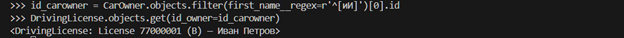
Вывести всех владельцев красных машин (или любого другого цвета, который у вас присутствует)
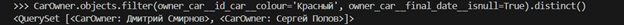
Найти всех владельцев, чей год владения машиной начинается с 2010 (или любой другой год, который присутствует у вас в базе)
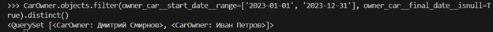
Задание 3
Вывод даты выдачи самого старшего водительского удостоверения
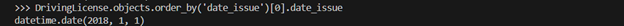
Укажите самую позднюю дату владения машиной, имеющую какую-то из существующих моделей в вашей базе
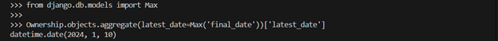
Выведите количество машин для каждого водителя
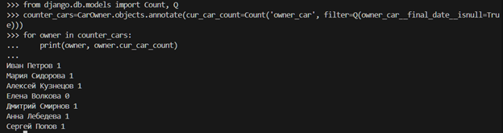
Подсчитайте количество машин каждой марки
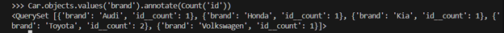
Отсортируйте всех автовладельцев по дате выдачи удостоверения
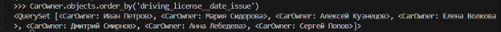